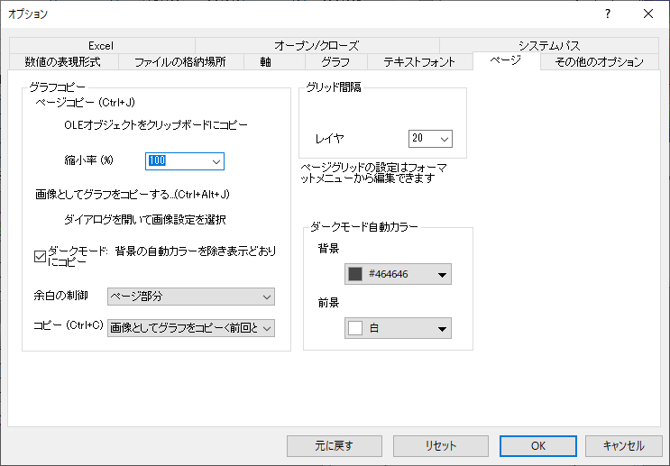

(オプション) 『ページ』タブ
Options-Dialog-Page-Tab
- 
『ページコピーの設定グループ』グループ
グラフウィンドウやレイアウトページの編集:ページコピーまたは編集:画像としてグラフをコピーする...メニューコマンドを使ったときのクリップボードにコピーされた画像についての事前設定が可能です。設定のうちいくつか（縮小率、余白の制御）はエクスポートするグラフのデフォルト設定に影響します。ただし、グラフエクスポート ダイアログを使って、簡単にデフォルトを書き換えて、テーマファイルに基づいたカスタマイズ設定を使うことができます。
ページコピー
(Ctrl+J)
|
OLE(Object Linking and Embedding)オブジェクトオブジェクトをクリップボードにコピーします。
- ページのサイズを制御します。 単位は元のページサイズのパーセントです。例えば、40%で表示する場合は40を入力します。デフォルトでは100％となっています。ページをコピーしてMSWordなどの別のアプリケーションに貼り付けると、Wordの規則に従って、貼り付け中にページが拡大・縮小される場合があることに注意してください。
|
画像としてグラフをコピーする...
(Ctrl+Alt+J)
|
ダイアログを開いて画像設定を選択します。
|
| 余白の制御
|
この値は、コピーされたグラフページの量を制御します。初期設定では、グラフの白い背景の範囲がグラフページとして見なされます。｢余白枠｣や ｢余白詰め｣のモードで使用されている内容領域 ("bounding box") は、そのページごとに規定されています。
- 余白枠を選択してページの内容領域の部分とその周りの余白 (『余白枠の割合』コンボボックス中で指定) をコピーします。境界ボックスには、グラフページの外に存在するオブジェクトが含まれます。
- 余白詰め：そのページの内容領域の部分だけを、(余白無しで)コピーします。境界ボックスの、グラフページの外側のオブジェクトも含むページ内で余白詰めとは異なります。
- ページ部分: グラフウィンドウ内のページ全体(白い領域)をコピー/エクスポートします。
- ページ内で余白詰め: グラフページ内の全て/領域の50%以上の要素周りのタイトな境界ボックスを使います。
_Page_Tab/Tip_icon.png) | それは、何らかのオブジェクトがグラフページの外側に存在していることが原因です。(例えば、作成したテキストオブジェクトをページの外側にドラッグ&ドロップして、それを忘れてしまったなど)余白の制御が、「余白詰め」または「余白枠」になっていると、Originは、グラフ上のすべてのオブジェクトを囲むようにバウンディングボックスを描きます。このとき、見えていないページの外側のオブジェクトも含みます。 これがエクスポートしたグラフを極端に小さくしてしまう原因となっています。 グラフをコピーして別のアプリケーションに貼り付けたとき、貼り付けたグラフが本来よりもはるかに小さく見える場合は、余白の制御をページ内で余白詰めに設定し、オプションを保存して、もう一度コピーして貼り付けてみてください。
|
†Note: Origin 2018より、(1) 境界ボックスの確認、(2) 境界ボックスをエクスポート余白編集ダイアログを使って調整できるようになりました。
|
| コピー (Ctrl+C)
|
デフォルトでは、Ctrl+Cキーを使ってグラフをコピーした場合、グラフを画像としてコピーします。このドロップダウンリストからページコピーを選択することでこの動作を切り替えできます。
|
『ページグリッドの間隔(ピクセル)』グループ
| レイヤ
|
このコンビネーションボックスで値を入力または選択して、レイヤのグリッド線の間隔を設定します。間隔の単位は、レイヤの1/500です。
|
Note: グリッドを表示するには、表示：表示様式：レイヤグリッドを選択するか、グラフページミニツールバーのグリッドの表示ボタン_Page_Tab/Popup_Show_Grids.png) をクリックします。 をクリックします。
|
ダークモード自動カラー
ウィンドウがダークモードに設定されている場合、グラフとレイアウトの背景と前景の色をグローバルに指定します。
ダークモードに切り替えると、背景色と前景色が指定した色に変わります。
ページの背景色が作図の詳細ダイアログの表示タブで編集されている場合、ページの背景色は作図の詳細ダイアログの優先順位の設定に従います。
動的に色反転
グラフウィンドウをダークモードにした場合、グラフ内のプロットとオブジェクトの色が反転します。このコントロールを使用して、ダークモードをオンにしたときに色を反転するかどうかを決定できます。これはシステム変数@DCRと同様です
- なし: 色の反転なし
- 黒のみ: 黒色の見反転
- 白黒: 白と黒の色のみ反転
- グレーカラー: グレーカラーを全て反転
- 全ての色: 全ての色を反転
- カスタマイズ: ダークモードカラーマッピングワークシートのカラーリストに従う
カスタマイズを選択した場合は、環境設定: ダークモード カラーマッピングを選択してカラーマッピングをカスタマイズします。
黒のみを選択した場合、前景色関連のコントロールが表示されます。
Note: プロットでカラーマップを使用した場合、度の設定で合っても色は反転しません。